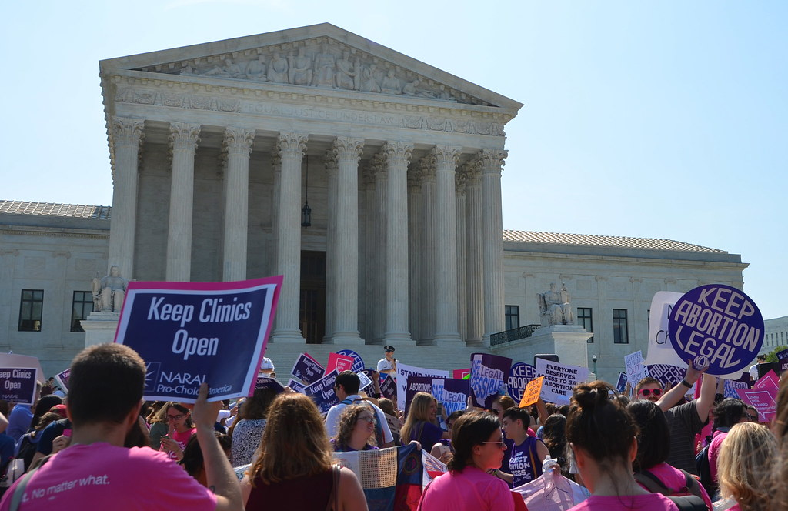

Providing awareness, advocacy, accessibility, and alliance
Take Action

Donate to an abortion fund
What is an abortion fund?
"A collective of people, non-profit or information group, that make abortion access a reality" - Stephanie Loraine, co-director of Florida Access Network, an abortion fund in Florida.